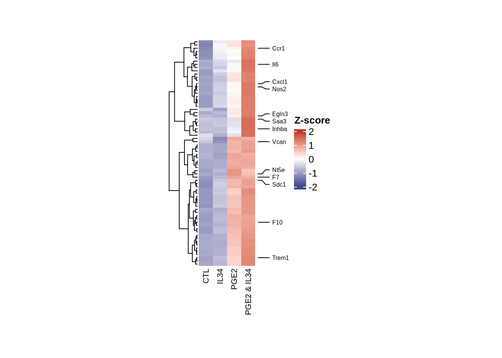
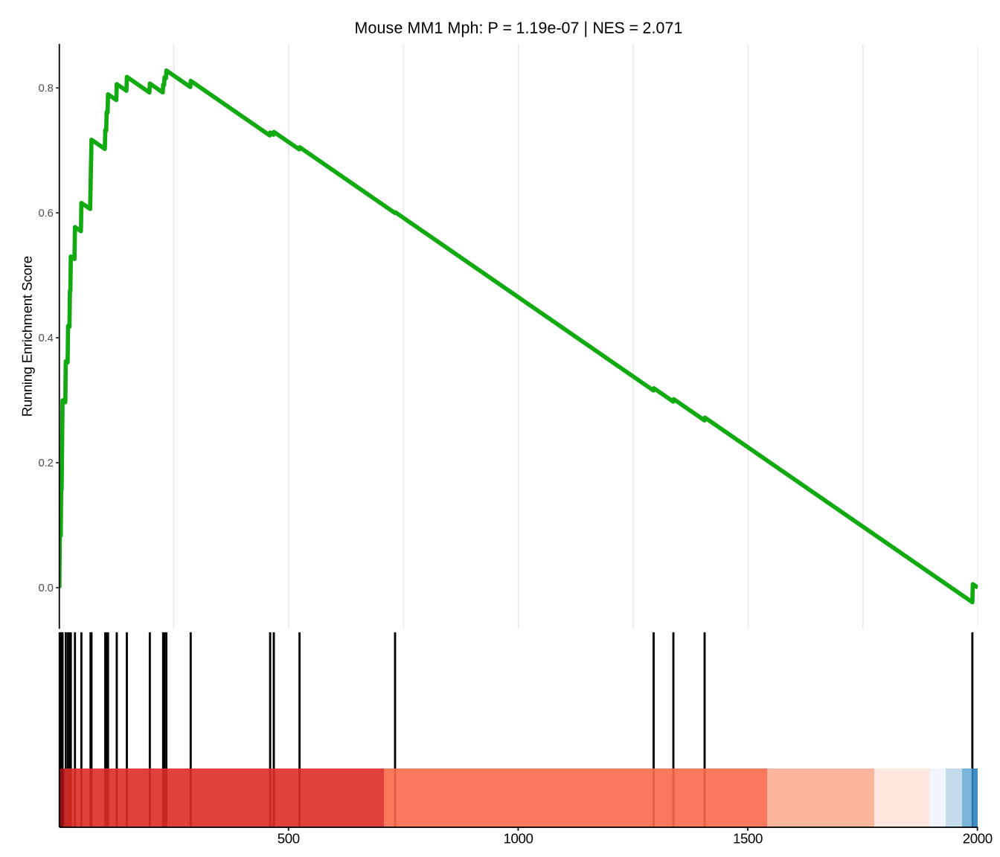
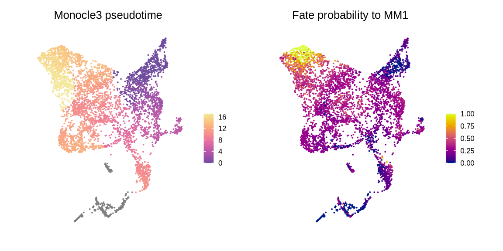
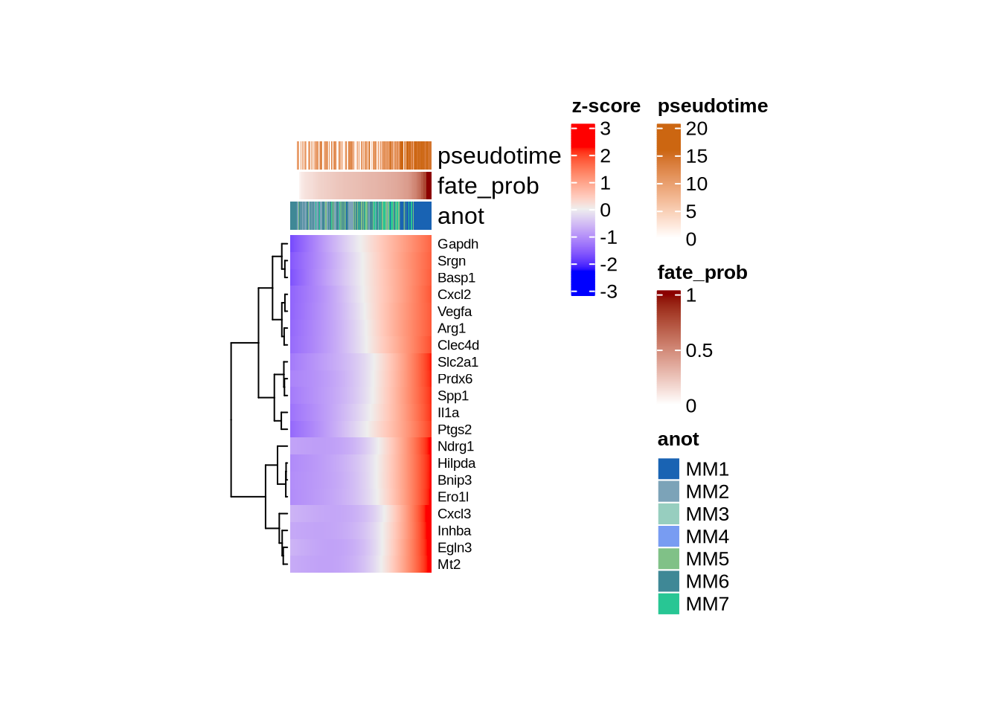
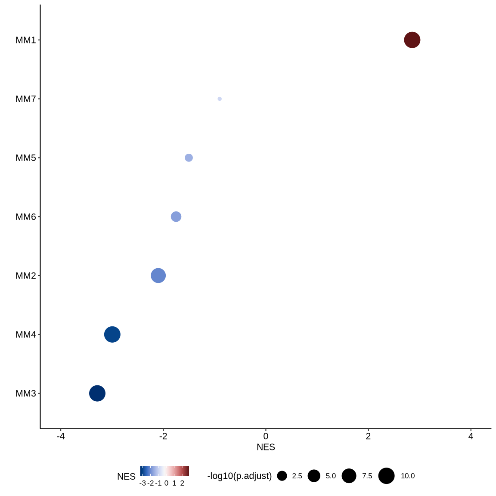
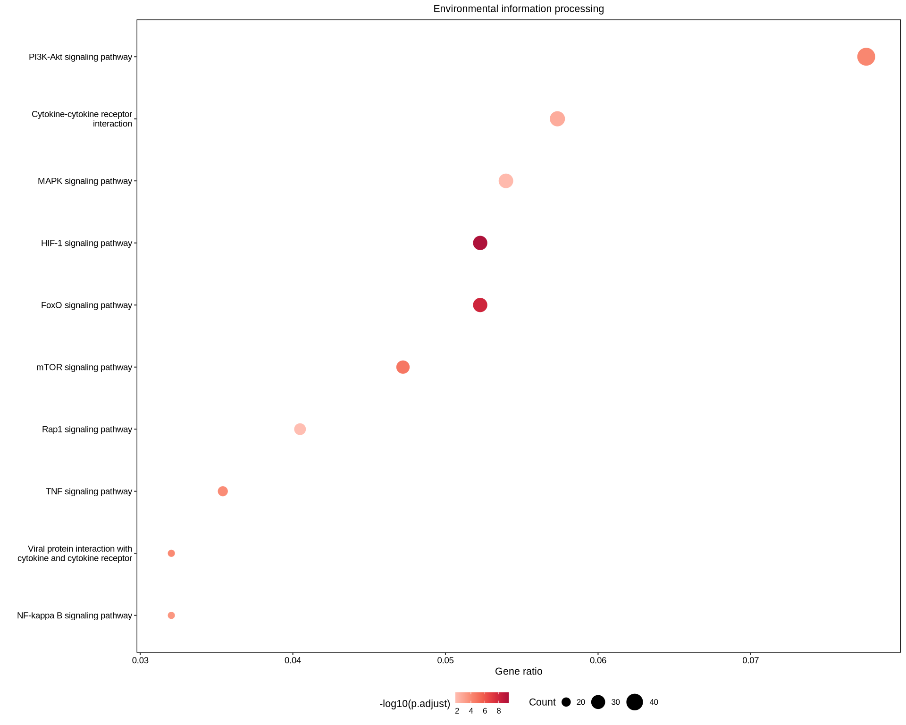

pkgs <- c("fs", "futile.logger", "configr", "stringr", "ggpubr", "ggthemes",
"jhtools", "glue", "ggsci", "patchwork", "tidyverse", "dplyr", "Seurat",
"scDblFinder", "paletteer", "readxl", "writexl", "ComplexHeatmap",
"circlize", "data.table")
for (pkg in pkgs){
suppressPackageStartupMessages(library(pkg, character.only = T))
}
fs::dir_create("./results/fig3")
# themes ----
my_theme1 = theme_classic(base_size = 6) +
theme(legend.key.size = unit(3, "mm"), axis.text = element_text(color = "black"))
# colors ----
mmu_mph_cols <- c("MM1" = "#1963b3", "MM2" = "#7ca3b8", "MM3" = "#97cebf",
"MM4" = "#789cf2", "MM5" = "#80c187", "MM6" = "#3f8896",
"MM7" = "#28c694")3 Figure 3
3.1 (a) DEG analysis
Heatmap of up-regulated genes in PGE2 & IL34 group.
## fig3a -----
selected_genes <- read_rds("./data/bulk_rna_select_genes.rds")
fpkm5 <- read_csv("./data/wangchao_mouse_v2.csv") %>% dplyr::filter(gene_name %in% selected_genes) %>% as.data.frame() %>%
tibble::column_to_rownames("gene_name") %>% dplyr::select(-1)
vst_dat3 <- fpkm5 %>% t() %>% as.data.frame() %>%
mutate(trt = rep(c("CTL", "PGE2", "IL34", "PGE2 & IL34"), each = 2)) %>%
aggregate(data = ., . ~ trt, FUN = mean) %>% column_to_rownames("trt") %>%
scale() %>% t()
gene_labs2 <- c("Ccr1", "Il6", "Cxcl1", "Nos2", "Egln3", "Saa3", "Inhba",
"Vcan", "Nt5e", "F7", "Sdc1", "F10", "Trem1")
labs_idx2 <- which(rownames(vst_dat3) %in% gene_labs2)
top_anot1 <-
ComplexHeatmap::rowAnnotation(foo = anno_mark(at = labs_idx2,
labels = rownames(vst_dat3)[labs_idx2],
labels_gp = gpar(fontsize = 6)))
col_fun = colorRamp2(c(-2, 0, 2), c("#3A488AFF", "white", "#BE3428FF"))
htp1 <- ComplexHeatmap::Heatmap(vst_dat3, show_row_names = F, cluster_columns = F,
# row_names_gp = gpar(fontsize = 4),
right_annotation = top_anot1,
column_names_gp = gpar(fontsize = 8,angle = 45),
name = "Z-score", col = col_fun,
height = unit(8, "cm"), width = unit(2, "cm"))
pdf("./results/fig3/fig3a_mks_heatmap.pdf", width = 3, height = 4)
print(htp1)
d <- dev.off()
3.2 (b) GSEA plot of MM1 driver genes
## fig3b: correlated driver genes gsea ----
trm2gn2 <- read_rds("./data/trm2gn2_bulk_common_genes.rds")
my_theme1 = ggplot2::theme_classic(base_size = 8) +
theme(legend.key.size = unit(3, "mm"), axis.text = element_text(color = "black", size = 8))
mks_df <- read_csv("./data/all_to_MM1_lineage_drivers_v2.csv")
inpt2 <- structure(mks_df[[2]], names = mks_df[[1]])
set.seed(241101)
tst_res <- clusterProfiler::GSEA(inpt2, TERM2GENE = trm2gn2, minGSSize = 1,
pvalueCutoff = 1, pAdjustMethod = "fdr", seed = T)
pval <- tst_res@result$pvalue %>% signif(., 4)
nes <- tst_res@result$NES %>% round(digits = 3)
tst_res@result %>% write_csv("bulk_feats_corr_lineage_gsea_res.csv")
gsea_p1 <-
enrichplot::gseaplot2(tst_res, geneSetID = 1, subplots = 1:2, pvalue_table = F,
color = "#11aa11FF", base_size = 7,
title = glue("Mouse MM1 Mph: P = {pval} | NES = {nes}"))
gsea_p1[[1]] <- gsea_p1[[1]] +
theme(plot.title = element_text(size = 8, hjust = .5))
ggsave("./results/fig3/fig3b_bulk_feats_corr_lineage_gsea_dot.pdf",
gsea_p1, width = 7, height = 6, unit = "cm")
3.2.1 Fig.S2ab Cell fate analysis of mouse macrophage
UMAP of pseudotime and fate probability
# 10x 3' Mph data
mmu_mph <- read_rds("./data/mph_mmu_seu_anot_fin.rds")
## figS2ab: pseudotime and fate probability plot -----
feat1 <- Seurat::FeaturePlot(mmu_mph, features = "monocle3_pseudotime", pt.size = 1e-2) +
my_theme1 + theme(legend.position = "right", plot.title = element_text(hjust = .5)) +
labs(color = "", title = "Monocle3 pseudotime") +
paletteer::scale_color_paletteer_c("grDevices::Sunset") +
ggplot2::coord_fixed() + Seurat::NoAxes()
feat2 <- Seurat::FeaturePlot(mmu_mph, features = "fate_prob_MM1", pt.size = 1e-2) +
my_theme1 + theme(legend.position = "right", plot.title = element_text(hjust = .5)) +
labs(color = "", title = "Fate probability to MM1") +
paletteer::scale_color_paletteer_c("grDevices::Plasma") +
ggplot2::coord_fixed() + Seurat::NoAxes()
p <- feat1 | feat2
ggsave("./results/fig3/figS2ab_monocle3_cellrank2.pdf", p, width = 6, height = 3)
3.2.2 Fig.S2c Heatmap of fate genes
## figS2c: specific gene heatmap ----
genes = c("Arg1", "Spp1", "Gapdh", "Basp1", "Vegfa", "Il1a", "Ptgs2",
"Hilpda", "Cxcl2", "Slc2a1", "Inhba", "Prdx6", "Egln3",
"Mt2", "Clec4d", "Cxcl3", "Ndrg1", "Bnip3", "Ero1l", "Srgn")
pt.matrix <- LayerData(mmu_mph[["RNA"]], layer = "data") %>%
.[genes, ] %>% as.matrix() %>% t() %>% as.data.frame() %>%
mutate(order = mmu_mph$monocle3_pseudotime, anot_fin = mmu_mph$anot_fin,
fate_prob = mmu_mph$fate_prob_MM1) %>%
dplyr::filter(!is.infinite(order)) %>%
dplyr::slice_sample(prop = .1, by = anot_fin) %>%
dplyr::arrange(fate_prob)
pt.matrix2 <- pt.matrix[, 1:20] %>% t()
genes <- rownames(pt.matrix2)
barcodes <- colnames(pt.matrix2)
pt.matrix2 <- t(apply(pt.matrix2, 1, function(x){smooth.spline(x, df=3)$y}))
pt.matrix2 <- t(apply(pt.matrix2, 1, function(x){(x - mean(x))/sd(x)}))
rownames(pt.matrix2) <- genes
colnames(pt.matrix2) <- barcodes
col_func1 <- circlize::colorRamp2(breaks = c(0, 16), colors = c("white", "#cc6611"))
col_func2 <- circlize::colorRamp2(breaks = c(0, 1), colors = c("white", "darkred"))
top_anot1 <-
ComplexHeatmap::HeatmapAnnotation(pseudotime = pt.matrix$order[barcodes],
fate_prob = pt.matrix$fate_prob[barcodes],
anot = pt.matrix$anot_fin[barcodes],
col = list(pseudotime = col_func1,
fate_prob = col_func2,
anot = mmu_mph_cols))
htkm <- ComplexHeatmap::Heatmap(
pt.matrix2,
name = "z-score",
show_row_names = TRUE,
cluster_rows = T, cluster_columns = F,
show_column_names = FALSE,
row_names_gp = gpar(fontsize = 7),
row_title_rot = 0,
cluster_row_slices = FALSE,
top_annotation = top_anot1, raster_by_magick = T,
height = nrow(pt.matrix2)*unit(3, "mm"),
width = ncol(pt.matrix2)*unit(.05, "mm"))
pdf("./results/fig3/figS2c_gene_fate_prob_heatmap.pdf", width = 4, height = 5)
print(htkm)
d <- dev.off()
3.3 (c) Identified macrophage subtypes in bulk RNA data
Dotplot of macrophage subtypes score
## fig3c: ----
gsea_dot_func1 <- function(mk_df = NULL, mph_names = NULL, fn = NULL){
gsea_lst <- lapply(mph_names, \(nm){
sel_mks <- mk_df %>% dplyr::filter(cluster == nm)
inpt <- structure(sel_mks$avg_log2FC, names = sel_mks$gene) %>% sort() %>% rev()
clusterProfiler::GSEA(inpt, TERM2GENE = trm2gn2, minGSSize = 1,
pvalueCutoff = 1, pAdjustMethod = "fdr", seed = T)
})
names(gsea_lst) <- mph_names
gsea_res <- lapply(mph_names, \(nm){
gsea_lst[[nm]]@result %>% mutate(celltype = nm)
}) %>% bind_rows() %>% dplyr::arrange((NES)) %>%
mutate(celltype = fct(as.character(celltype))) %>%
mutate(counts = str_split(core_enrichment, "/") %>% unlist() %>% length())
write_csv(gsea_res, glue("fig3b_bulk2sce_gsea_res.csv"))
dot2 <- ggplot2::ggplot(gsea_res, aes(x = NES, y = celltype, size = -log10(p.adjust), color = NES)) +
geom_point() + labs(y = "") + my_theme1 +
ggplot2::scale_x_continuous(limits = c(-4, 4)) +
paletteer::scale_color_paletteer_c("grDevices::Blue-Red 3") +
theme(legend.position = "bottom")
return(dot2)
}
mmu_mph_mks <- read_csv("./data/mph_mmu_anot_fin_mks.csv")
p <- gsea_dot_func1(mk_df = mmu_mph_mks, mph_names = unique(mmu_mph_mks$cluster), fn = "3samp_mks")
ggsave("./results/fig3/fig3c_bulk2sce_gsea_dot.pdf", p, width = 6, height = 6, unit = "cm")
3.3.1 Fig.S2d Function of MM1
3’ Macrophage MM1 markers enrichment dotplot
# figS2d
erch_res <- read_csv("./data/mph_mm1_kegg_erch_res.csv")
tst1 <- erch_res %>% dplyr::filter(grepl("Environmental", category)) %>%
dplyr::slice_min(order_by = p.adjust, n = 15) %>% tibble %>%
mutate(pth_gene_num = str_split(BgRatio, "/", simplify = T)[, 1] %>% as.numeric()) %>%
mutate(ratio = Count / pth_gene_num) %>% dplyr::arrange(desc(Count)) %>%
dplyr::slice_max(order_by = Count, n = 10) %>%
mutate(background = as.numeric(str_split(GeneRatio, "/", simplify = T)[, 2])) %>%
mutate(x = Count/background)
dot2 <- tst1 %>% dplyr::arrange(desc(x)) %>%
mutate(Description = str_wrap(Description, width = 30) %>% fct() %>% fct_rev(),
) %>%
ggplot2::ggplot(aes(x = x, y = Description,
color = -log10(p.adjust), size = Count)) +
ggplot2::geom_point() +
ggplot2::scale_size(range = c(2, 6), breaks = c(10, 20, 30, 40), labels = c(10, 20, 30, 40)) +
my_theme1 + paletteer::scale_color_paletteer_c("ggthemes::Red") +
theme(axis.text = element_text(size = 7)) + labs(x = "Gene ratio", y = "") +
theme(legend.position = "bottom", axis.line = element_blank(),
panel.border = element_rect(fill = NA, color = "black", linewidth = .5),
plot.title = element_text(size = 8, hjust = .5)) +
labs(title = "Environmental information processing")
ggsave("./results/fig3/figS2d_MM1_kegg_enrich_dot2.pdf", dot2, width = 10, height = 8, unit = "cm")